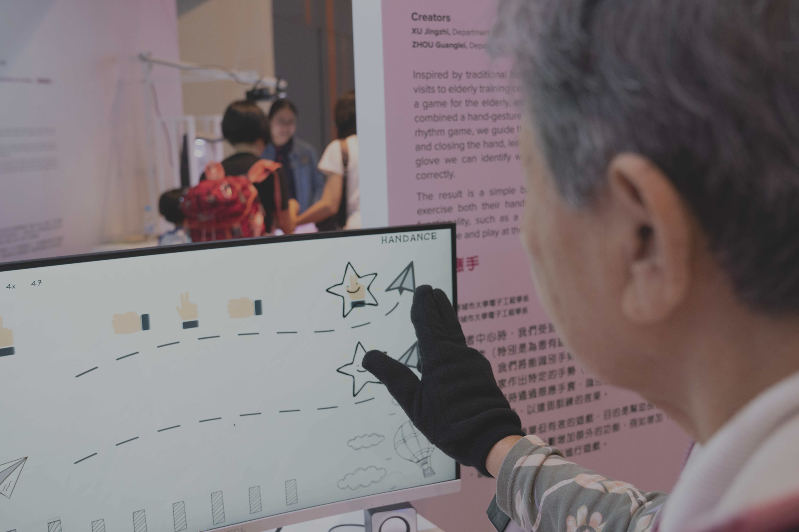
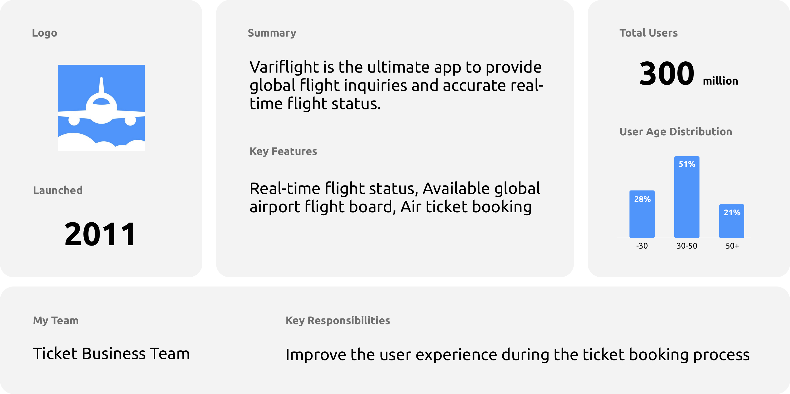
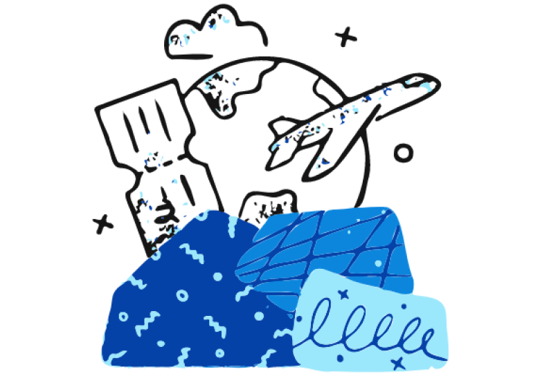
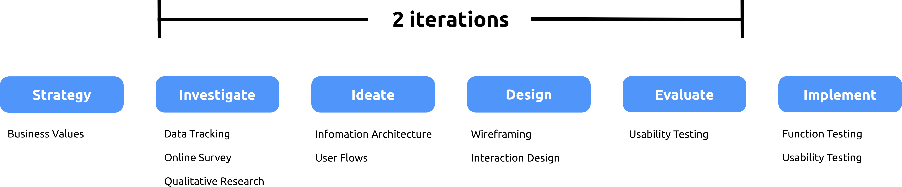
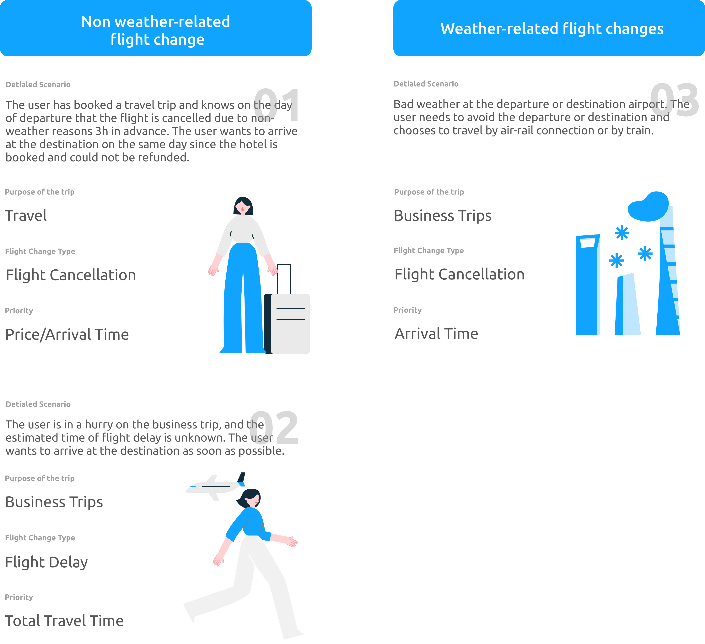
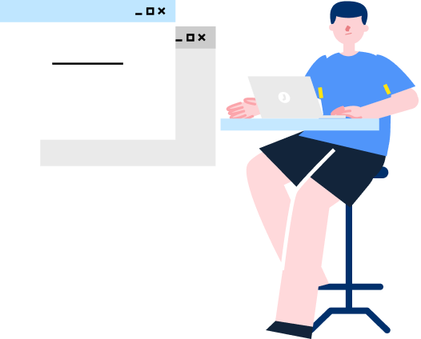
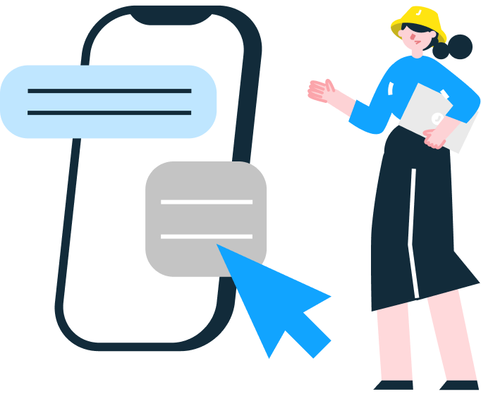
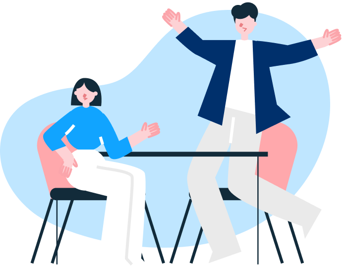
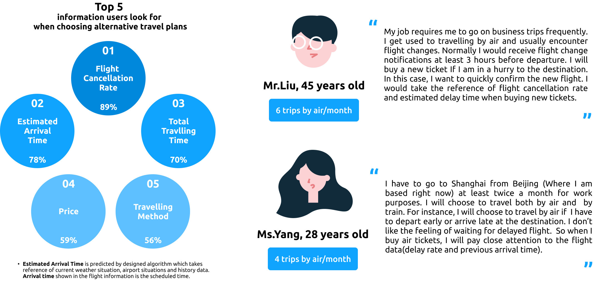
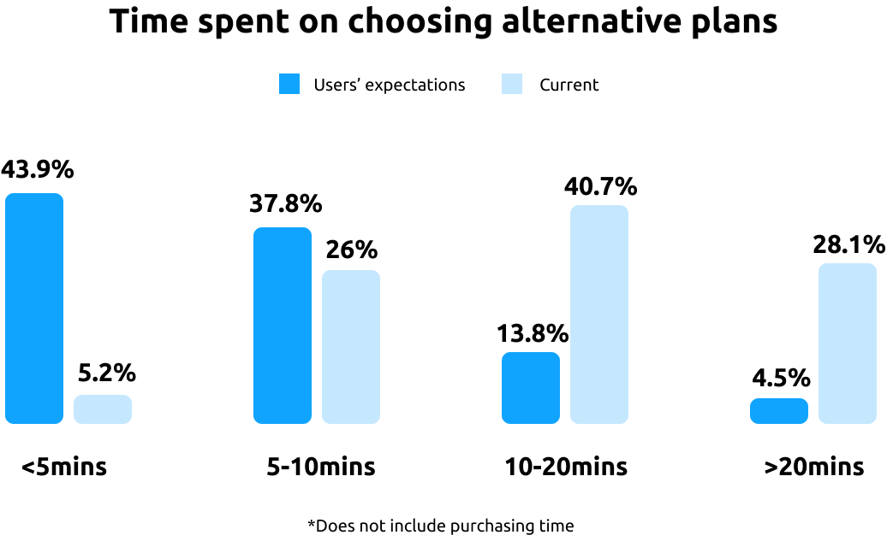

Variflight
Alternative Travel Plan Recommendation
#Work Project #UX Design
Revamped the alternative travel plans recommendation function for flight delay or cancellation.
Holder
Variflight
Duration
Jun - Jul 2021(6 weeks)
Main Tool
Sketch
My Role
Product Designer, Product Manager
My Work
Product Strategy
User Research
Information Architecture
User Flow
UX Design
Usability Testing
Cross-functional teams communication
Work Directly With
1 Product Manager
2 Back-end Engineers
1 Front-end Engineer
1 Testing Engineer
1 UI Designer
Report Directly To
Product Team Leader
Product Director
Background
A summary of Variflight and my team.

Problem
Many users find that current alternative travel plans recommendation could not promptly provide them most suitable options after their flight delay or cancellation. Consequently, the conversion rate from the recommendation page to ticket-booking page is constantly decreasing.
How might we iterate the current recommendation page to improve users’ efficiency in finding best options after flight delay or cancellation?

Process
The re-design project lasted 6 weeks.

- 1st Iteration -
Research
At the beginning of this project, I analyzed three main flight delay or cancellation scenarios to obtain insights.

After discussing with product lead, I decided to re-design the current recommendation page instead of re-constructing recommendation logics and algorithms due to following reasons:
The specific situation varies greatly, and even the very uncommon train transit option may be a more reasonable choice in some cases. Therefore, direct flights, air-rail connections, direct trains, air transfers, and train transfers all need to be considered. By the same token it is impossible to precisely define 'bad' options and not to recommend.
We thought about recommending alternative travel plans by users'situation (according to whether the user is at the airport to prioritize the recommendation of direct airplane or air-rail link trip). However, it does not reduce the number of recommended plans. And for the delay scenario, the flight is generally delayed by several small periods, and the users' thoughts for the delay vary.
Some key data are missing that leads to difficulity defining unrealistic recommended plans. For example, travel times between the airport and the HSR station and the availability of convenient public transportation were unknown.
Methods
All following data and insights were obtained from three research methods.

Tracking current data
23275 samples

Online Survey
1403 samples

Qualitative Research
6 In-depth interviews
Findings
01
The tracking of current data showed that the most important filtering information: departure/arrival time and travelling method were not in obvious positions. Many users get overwhelmed by the flight information and could not find filter at first glances.
02
According to in-depth interviews and online survey, many users indicated that after flight changes they would take more notice of information such as flight cancellation rate and estimated arrival time.

03
From the online survey, 81.7% users mentioned that they wanted to promptly (less than 10 minutes) choose alternative travel plans after flight changes. Current recommendation includes all possible plans and it is time-consuming for users to find the most suitable one.

Ideate
Defined the essential elements and outlined the basic structure of the recommendation function.
Information Architecture
User Flows

First-round Design
Key features in wireframe are shown.
First-round Evaluation
The design was on the right track but had to think about whether certain information were necessary to present.
Methods
Conducted three in-person usability testing sessions with target users who are on business trips frequently.
Key Conclusions
All participants were able to complete all core tasks.
Presenting original flight information was not necessary. Participants mentioned that they could have their original flights refunded or changed via the airline website or mini-programs.
Too much data inside alternative flights information.
All participants suggested that they wanted to know whether it was transit from same station or different station.